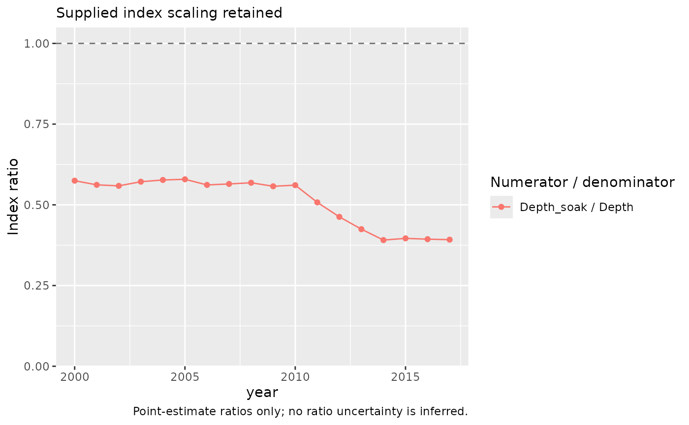

Calculate point-estimate ratios between stored annual indices
Source:R/index-ratio.R
index_ratio.RdCompare annual series without fitting models or repeating predictions. Ratios are a separate diagnostic, not uncertainty intervals for differences between models.
Usage
index_ratio(
indices,
reference = NULL,
labels = NULL,
normalise = c("none", "common"),
baseline_years = NULL,
series = NULL,
component = NULL
)
# S3 method for class 'influ_index_ratio'
as.data.frame(x, row.names = NULL, optional = FALSE, ...)
# S3 method for class 'influ_index_ratio'
print(x, ...)
# S3 method for class 'influ_index_ratio'
summary(object, ...)Arguments
- indices
A named list of calculated
cpue_index()objects orinflu_diagobjects frominflu(); one diagnostic with an explicitseriesselection; or a stored influ_steps sequence. Fitted models are not accepted.- reference
Denominator label. Defaults to the first supplied series. For steps, defaults to
"previous";"first"or a step label compares every other step with that denominator. A series is never divided by itself.- labels
Optional unique display labels, one per supplied series or step.
- normalise
"none"retains the supplied estimates and their scaling."common"divides each series by its geometric mean over exactly the same positive, matched years. This is display normalisation, not a new index or an uncertainty calculation.- baseline_years
Optional unique year labels for common normalisation. Every nominated year must have a finite, positive estimate in every series. When omitted, all shared years meeting that requirement are used.
- series
For one diagnostic, explicitly select both
c("standardised", "nominal");"standardized"is also accepted. Such a comparison requiresnormalise = "common", because the standardised diagnostic is a year-effect contrast, not expected CPUE in response units. For a list of diagnostics, select one series shared by all inputs; the default is"standardised".- component
One stored diagnostic component. Required if more than one component is available. Encounter, positive, and combined-response targets are never silently combined.
- x, object
A calculated
influ_index_ratio.- row.names, optional
Passed to the data-frame method.
- ...
Additional arguments passed to the data-frame method; otherwise unused.
Value
A compact influ_index_ratio with table and metadata.
as.data.frame() returns the stored year, numerator and denominator labels,
original estimates, display estimates, ratio, and status.
Details
Only matching year labels are divided. The returned table spans the union of years and marks missing estimates, zero denominators, and non-finite ratios explicitly. A zero numerator is a valid ratio of zero. No interpolation, extrapolation, or small positive replacement is used.
Expected-response, year-effect, and area-integrated indices cannot be mixed. Known response, component, units, area, and catchability metadata must agree. Matching metadata cannot establish that independently chosen reference populations answer the same question: the analyst must verify those populations and any exposure/trial conventions. Older index objects do not store all response definitions; unverified fields are recorded in metadata. Common normalisation compares shapes, not absolute CPUE or abundance. Already rescaled expected-response indices covering different periods require common normalisation rather than comparing separate full-period geometric-mean anchors.
The result stores point estimates only. Marginal index intervals or separate annual covariance matrices do not identify cross-model covariance, so dividing interval endpoints would not give a valid ratio interval. No independence assumption, posterior pairing, or model refit is made.
Examples
data(lobsters_per_pot)
fit_a <- glm(lobsters ~ year + depth, poisson(), data = lobsters_per_pot)
fit_b <- glm(lobsters ~ year + depth + soak, poisson(), data = lobsters_per_pot)
index_a <- cpue_index(fit_a, reference_data = data.frame(depth = 40),
uncertainty = "none")
index_b <- cpue_index(fit_b,
reference_data = data.frame(depth = 40, soak = 1), uncertainty = "none")
ratios <- index_ratio(list(Depth = index_a, Depth_soak = index_b),
reference = "Depth")
plot_index_ratio(ratios)
